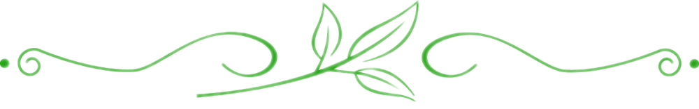

И.А. Кулибин родился в семье мещанина, зарабатывавшего на жизнь торговлей мукой. Отец был старообрядцем, который воспитывал детей в строгости и послушании.


В 17 лет Кулибин впервые увидел настоящие часы у соседа. Он выпросил их и попытался скопировать механизм, но не смог. Позже, побывав с отцом в Москве, он купил испорченную машинку для нарезки шестерёнок и токарный станок. Дома Кулибин починил их и начал учиться делать свои часы.


После смерти отца в 1758 году Иван Кулибин открыл в Нижнем Новгороде часовую мастерскую. Свободное время он посвящал изобретению различных устройств: механических игрушек для детей и взрослых, сложных часовых механизмов.

В 1764 году Кулибин создал уникальные часы в форме яйца, оснащенные сложным механизмом, демонстрирующим различные астрономические явления. Эти часы произвели огромное впечатление на нижегородского губернатора, который представил их императрице Екатерине II.

Императрица высоко оценила талант Кулибина и пригласила его в Санкт-Петербург, где в 1769 году он был назначен заведующим механической мастерской Петербургской Академии Наук.

Назначение Кулибина заведующим механической мастерской стало отправной точкой для его плодотворной деятельности в области науки и техники. Он занимался разработкой и усовершенствованием различных приборов и механизмов, внеся значительный вклад в развитие русского приборостроения.